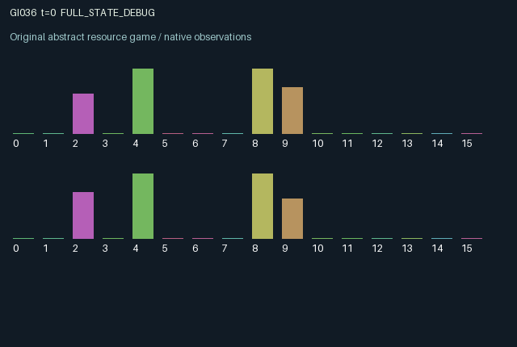

GI036 / LEGACY_ARRAY
astra-d2-00036: Perishable reciprocal catalyst scheduling
2 agents5 actions16 observation columns32 original horizonRuntime: PASS
Release verification episode
Untrained uniform legal actions. Actual JAX state sampled along the full original episode; full-state debug camera. No human performance or learning claim.

Run this game
crucibles play --game 36
Start Python locally, then open the address printed by the terminal. Installation, multiplayer, takeover and keyboard controls →
Objective, rewards & ending
Exact task contract
{
"objective": "Accumulate original per-agent rewards under the interaction rules in mechanism.md.",
"natural_termination": "No early terminal; original t >= 32 horizon.",
"exact_transition_and_reward_source": "def raw_step(self, key, state, actions):\n target_mask = jax.nn.one_hot(state[\"target\"], 2, dtype=jnp.float32)\n available = jnp.sum(state[\"catalyst\"] * target_mask, axis=1)\n harvest = (actions == 1) & (state[\"energy\"] >= 0.2)\n send = ((actions == 2) | (actions == 4)) & (state[\"energy\"] >= 0.25)\n success = (actions == 3) & (state[\"stock\"] >= 1.0) & (state[\"energy\"] >= 0.35) & (available >= 1.0)\n completed = success & (state[\"stage\"] == 1)\n failed_process = (actions == 3) & ~success\n harvest_f = harvest.astype(jnp.float32)\n send_f = send.astype(jnp.float32)\n success_f = success.astype(jnp.float32)\n completed_f = completed.astype(jnp.float32)\n emitted_color = (actions == 4).astype(jnp.int32)\n emitted = jax.nn.one_hot(emitted_color, 2, dtype=jnp.float32) * send_f[:, None]\n retained = jnp.maximum(state[\"catalyst\"] - target_mask * success_f[:, None], 0.0) * 0.65\n next_catalyst = jnp.clip(retained + jnp.roll(emitted, 1, axis=0), 0.0, 2.0)\n next_stock = jnp.clip(state[\"stock\"] + harvest_f - success_f, 0.0, 4.0)\n next_energy = jnp.clip(state[\"energy\"] + 0.04 + 0.3 * (actions == 0).astype(jnp.float32) - 0.2 * harvest_f - 0.25 * send_f - 0.35 * success_f - 0.05 * failed_process.astype(jnp.float32), 0.0, 1.5)\n next_state = {\n \"t\": state[\"t\"] + jnp.array(1, dtype=jnp.int32),\n \"stock\": next_stock,\n \"energy\": next_energy,\n \"stage\": jnp.where(success, 1 - state[\"stage\"], state[\"stage\"]).astype(jnp.int32),\n \"target\": jnp.where(completed, 1 - state[\"target\"], state[\"target\"]).astype(jnp.int32),\n \"catalyst\": next_catalyst,\n \"last_success\": success_f,\n \"completed\": state[\"completed\"] + completed_f,\n }\n rewards = jnp.clip(0.12 * success_f + 0.6 * completed_f + 0.2 * jnp.roll(completed_f, 1) - 0.025 * send_f - 0.03 * failed_process.astype(jnp.float32), -1.0, 1.0).astype(jnp.float32)\n done_all = next_state[\"t\"] >= 32\n dones = jnp.full((2,), done_all, dtype=jnp.bool_)\n info = {\"done_all\": done_all, \"legal_mask\": self.legal_actions(next_state)}\n return self.observe(next_state), next_state, rewards, dones, info"
}Declared per-step reward bounds: -1.0 to 1.0. Observability: source_defined.
Rules
Original mechanism document (historical status wording retained)
# astra-d2-00036: Perishable reciprocal catalyst scheduling This parentless proposal concerns a two-stage production process in which an agent cannot manufacture its own catalyst. It is related to generic reciprocal resource exchange and perishable-inventory scheduling. No benchmark source or other proposal was consulted. Distinctness, eligibility, compilation and learning effectiveness have not been established. Both agents hold their own raw stock, energy and two-stage job. Completing a job flips that agent's required catalyst color. Actions are 0 recuperate, 1 harvest raw stock, 2 send color 0, 3 process, and 4 send color 1. Sending consumes energy and puts one unit in the other agent's next-state catalyst reservoir. Processing uses only catalyst already present before the transition, so a simultaneous shipment cannot satisfy a current process action. One raw unit, sufficient energy and one matching catalyst unit advance a stage. Two advances complete the current job. Unused catalyst decays by a factor of 0.65 each step, and reservoirs hold at most two units per color. The dependency is reciprocal and delayed: each agent must sacrifice a potential local work action to create a partner's future processing opportunity. Replenishing energy, collecting stock, timing shipments and switching colors after a completion compete for the same action slot. Wrong-color shipments remain physically persistent until decay but cannot process the current order. Raw stock is private. Both orders, stages, energy levels, catalyst reservoirs, latest process successes and completion totals are visible. Observation columns 0..15 are time/32; own stock/4; own energy/1.5; own stage; own target; own catalysts 0 and 1 divided by 2; partner stage; partner target; partner energy/1.5; partner catalysts 0 and 1 divided by 2; own and partner latest success; own and partner completion totals/16. Reward is 0.12 per stage advance, an additional 0.60 for own completion, 0.20 for partner completion, minus 0.025 for a shipment and 0.03 for an unsuccessful processing attempt. The explicit clipping bounds each reward in [-1,1]; the unclipped listed terms are already bounded between -0.03 and 0.92 because action alternatives are exclusive. Sharing completion reward creates an incentive to supply the partner, while local production remains valuable. No terminal bonus exists. All five actions are legal, with unmet resource conditions producing the specified ineffective action rather than an invalid mask. Reset randomness uses only its supplied key. Later transitions are deterministic, and the step key is unused. The clock advances once per raw step and both agents terminate at step 32; the terminal physical state and observation are returned intact. Status: authored source only. No execution, isolated validation, training, scoring, mechanism qualification or nonisomorphism claim is supplied.
Commands
0Recharge
1Harvest stock
2Send catalyst type 0
3Process with available catalyst
4Send catalyst type 1
Roles & abilities
agent_0 Original legacy agent; see mechanism and source
agent_1 Original legacy agent; see mechanism and source
Observation permissions
Training receives only the original observation rows. Role cameras use declared visibility; debug cameras are explicitly marked. Local benchmark records log debug exposure and role takeover history.
Exact observation layout
[
{
"slice": [
0,
16
],
"visibility": "exact original observe() below",
"source_code": "def observe(self, state):\n other = jnp.array([1, 0], dtype=jnp.int32)\n obs = jnp.zeros((2, 16), dtype=jnp.float32)\n obs = obs.at[:, 0].set(state[\"t\"].astype(jnp.float32) / 32.0)\n obs = obs.at[:, 1].set(state[\"stock\"] / 4.0)\n obs = obs.at[:, 2].set(state[\"energy\"] / 1.5)\n obs = obs.at[:, 3].set(state[\"stage\"].astype(jnp.float32))\n obs = obs.at[:, 4].set(state[\"target\"].astype(jnp.float32))\n obs = obs.at[:, 5].set(state[\"catalyst\"][:, 0] / 2.0)\n obs = obs.at[:, 6].set(state[\"catalyst\"][:, 1] / 2.0)\n obs = obs.at[:, 7].set(state[\"stage\"][other].astype(jnp.float32))\n obs = obs.at[:, 8].set(state[\"target\"][other].astype(jnp.float32))\n obs = obs.at[:, 9].set(state[\"energy\"][other] / 1.5)\n obs = obs.at[:, 10].set(state[\"catalyst\"][other, 0] / 2.0)\n obs = obs.at[:, 11].set(state[\"catalyst\"][other, 1] / 2.0)\n obs = obs.at[:, 12].set(state[\"last_success\"])\n obs = obs.at[:, 13].set(state[\"last_success\"][other])\n obs = obs.at[:, 14].set(state[\"completed\"] / 16.0)\n obs = obs.at[:, 15].set(state[\"completed\"][other] / 16.0)\n return obs"
}
]Entity visibility & attributes
[]
Actual verification & provenance
Per-game execution receipt
{
"game": "gi036",
"status": "PASS",
"verification_revision": 2,
"source_sha256": "d35c8a0d01c97aa843fceed89219cb188682883d9e72c64d801c5279157a0538",
"seed": 20261101,
"runtime": {
"jax": "0.4.38",
"numpy": "1.26.4",
"devices": [
"TFRT_CPU_0"
]
},
"dimensions": {
"num_agents": 2,
"observation_size": 16,
"num_actions": 5,
"max_steps": 32
},
"checks": {
"eager_reset": {
"status": "PASS",
"seconds": 1.0073916912078857
},
"observation_spaces_legal_masks": {
"status": "PASS",
"seconds": 0.19463586807250977
},
"eager_step": {
"status": "PASS",
"seconds": 0.961430549621582
},
"jit_reset": {
"status": "PASS",
"seconds": 0.37993621826171875
},
"jit_step": {
"status": "PASS",
"seconds": 0.2765328884124756
},
"eager_jit_integer_parity_float_measurement": {
"status": "PASS",
"seconds": 0.0005054473876953125
},
"jit_vmap_reset": {
"status": "PASS",
"seconds": 0.5283360481262207
},
"jit_vmap_step": {
"status": "PASS",
"seconds": 0.4283280372619629
},
"outer_autoreset_api": {
"status": "PASS",
"seconds": 0.7180807590484619
},
"full_original_horizon_episode_and_render": {
"status": "PASS",
"seconds": 1.622511625289917
}
},
"human_scores": null,
"browser_controls": "PENDING",
"failures": [],
"elapsed_seconds": 6.568191051483154,
"float_parity_max_abs": 5.960464477539063e-08,
"numerical_parity": "UNDETERMINED_NONZERO_FLOAT_DIFFERENCE",
"raw_terminal_absorbing": "NOT_PART_OF_ORIGINAL_LEGACY_CONTRACT",
"terminal_outer_reset": "PASS",
"episode_steps": 32,
"scripted_random_returns": [
-0.30000000447034836,
-0.40499999932944775
],
"terminal": true,
"demo_information": "FULL_STATE_DEBUG",
"demo_frames": 33,
"render_roles_checked": 2
}Chromium control verification
{
"game": "gi036",
"status": "PASS",
"human_scores": null,
"engineering": true,
"checks": [
"catalog_selected_and_real_native_reset",
"dom_queue_and_native_step",
"second_participant_ownership_and_native_joint_step",
"all_roles_individually_controllable_no_role_cap",
"explicit_debug_camera",
"release_to_pure_ai_without_reset",
"close_session_preserves_log"
],
"ui_sha256": "96243f9de144b80b5e20a114330e2206bdcd58d3efc9c6f13bbc08b95cacc14d",
"keyboard": "NO_LEGAL_CARDINAL_COMMAND_FOR_ROLE0_AT_RESET",
"seconds": 3.7065248489379883
}Original identity and file hashes
{
"id": 36,
"key": "gi036",
"title": "astra-d2-00036: Perishable reciprocal catalyst scheduling",
"summary": "",
"tags": [],
"family": "legacy_array",
"dimensions": {
"num_agents": 2,
"observation_size": 16,
"num_actions": 5,
"max_steps": 32
},
"source_sha256": "d35c8a0d01c97aa843fceed89219cb188682883d9e72c64d801c5279157a0538",
"manifest_sha256": "c0a1ec60597d474f4e6790bbfb9bf52c0494842efc446d0b6d0b8b2307da3c30",
"files": [
{
"file": "candidate.py",
"sha256": "d35c8a0d01c97aa843fceed89219cb188682883d9e72c64d801c5279157a0538",
"bytes": 4393,
"origin": "work/exp_2/astra_generation/discovery_v2/initial/candidate_00036/attempt_00/candidate.py"
},
{
"file": "mechanism.md",
"sha256": "eec790723a83900b554cfd0261a7f89ec1ab1a2af6d62e5824a6ce213bbd9b2f",
"bytes": 2910,
"origin": "work/exp_2/astra_generation/discovery_v2/initial/candidate_00036/attempt_00/mechanism.md"
}
],
"original_status": "LEGACY_SOURCE",
"original_saved_replay": false,
"release_validation": "PASS",
"human_scores": null,
"browser_validation": "PASS"
}